About: The Hangover adalah film komedi Amerika Serikat tahun 2009 yang disutradarai oleh Todd Phillips, ditulis oleh Jon Lucas, dan diproduseri oleh Todd Phillips dan Daniel Goldberg. Film ini dibintangi oleh Bradley Cooper, Ed Helms, Zach Galifianakis, Justin Bartha, dan Heather Graham. Film ini dirilis di Amerika Utara pada 5 Juni 2009 dan mendapat tanggapan positif serta sukses di pasaran.
About: Dumb and Dumber adalah film komedi Amerika Serikat yang dirilis pada tahun 1994 yang dibintangi oleh Jim Carrey, dan Jeff Daniels. Film ini ditulis dan disutradarai oleh Farrelly brothers, film yang menampilkan komedi slapstick dan lelucon yang gross-out. Dumb and Dumber merupakan awal dari kesuksesan perusahaan film Farrelly Brothers, sehingga popularitas perusahaan film ini melejit dan memengaruhi produksi film-film selanjutnya.
Sebuah prekuel dari film ini berjudul Dumb and Dumberer: When Harry Met Lloyd, yang sama sekali tidak diperankan oleh pemeran film sebelumnya. Prekuel ini dirilis pada tahun 2003, dan banyak kritikus film yang merasa kecewa dengan kualitas film ini. Meskipun demikian, prekuel ini masuk kategori box-office.
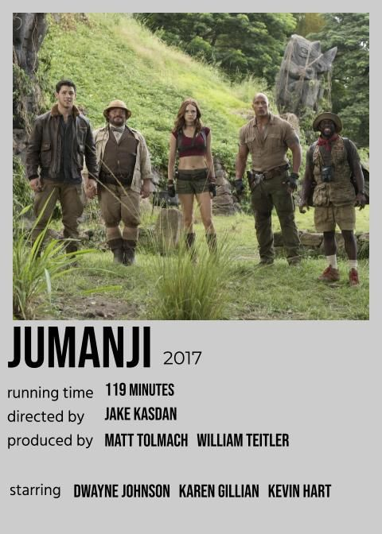
About: Jumanji Welcome to the Jungle adalah film komedi petualangan Amerika Serikat tahun 2017[6] yang disutradarai oleh Jake Kasdan dan diproduseri oleh Matt Tolmach dan William Teitler. Naskah film ini ditulis oleh Jake Kasdan, Chris McKenna, Erik Sommers, Scott Rosenberg dan Jeff Pinkner, sementara ceritanya ditulis oleh Chris McKenna berdasarkan buku Jumanji karya Chris Van Allsburg. Film ini dibintangi oleh Dwayne Johnson, Jack Black, Kevin Hart, Karen Gillan, Nick Jonas dan Bobby Cannavale.
Film Jumanji: Welcome to the Jungle merupakan sebuah penghormatan kepada Robin Williams, aktor dan komedian yang membintangi film Jumanji dan meninggal pada tahun 2014.[7] Film ini merupakan film kolaborasi kedua Dwayne Johnson dan Kevin Hart setelah film Central Intelligence. Film ini ditayangkan secara perdana di Grand Rex, Paris pada tanggal 5 Desember 2017 dan dirilis di Amerika Serikat pada tanggal 20 Desember 2017.[2] Film ini mendapatkan ulasan rerata dari para kritikus.
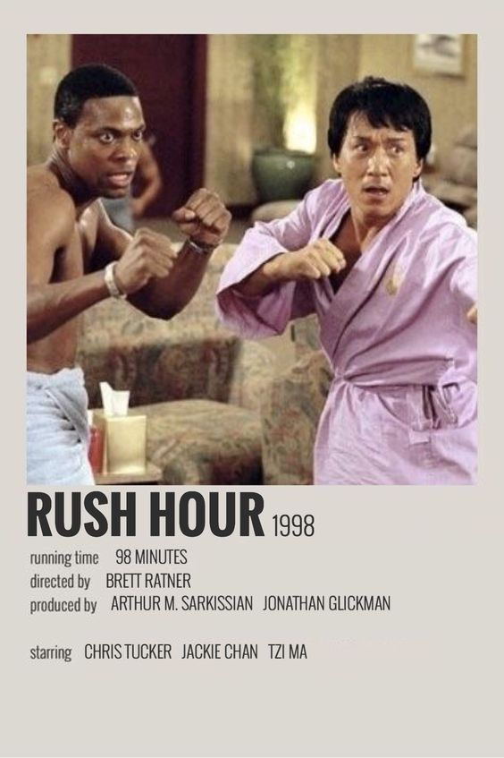
About: Rush Hour adalah film komedi laga Amerika Serikat tahun 1998 yang disutradarai oleh Brett Ratner dan ditulis oleh Jim Kouf dan Ross LaManna dari sebuah cerita oleh LaManna. Film ini dibintangi oleh Jackie Chan dan Chris Tucker sebagai petugas polisi yang ditugaskan untuk menyelamatkan putri seorang diplomat Tiongkok yang diculik. Tzi Ma, Tom Wilkinson, Ken Leung, Mark Rolston, Elizabeth Peña dan Rex Linn memainkan peran pendukung. Dirilis pada 18 September 1998, film ini meraup lebih dari $ 244 juta di seluruh dunia.
About: 21 Jump Street adalah sebuah aksi komedi Amerika Serikat yang disutradarai oleh Phil Lord dan Chris Miller dan dibintangi oleh Channing Tatum dan Jonah Hill. Film ini diangkat dari serial televisi tahun 1987 berjudul sama yang dibintangi oleh Johnny Depp.
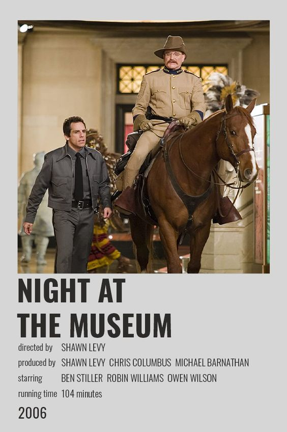
About: Night at the Museum merupakan sebuah film komedi Amerika Serikat yang dirilis pada tahun 2006. Film ini disutradarai oleh Shawn Levy. Pemain utamanya di film ini adalah Ben Stiller, Robin Williams, Dick Van Dyke, Mickey Rooney, Owen Wilson, Bill Cobbs, dan masih banyak lagi.
Dirilis pada 22 Desember 2006 di Amerika Serikat.
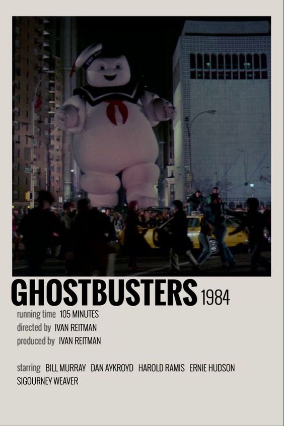
About: Ghostbusters merupakan sebuah film komedi supranatural Amerika Serikat yang dirilis pada tahun 1984. Film ini disutradarai oleh Ivan Reitman dan dibintangi antara lain oleh Bill Murray, Dan Aykroyd, Sigourney Weaver, Harold Ramis, Rick Moranis, dan Ernie Hudson. Tanggal rilisnya pada 8 Juni 1984.[1]
Film ini dilanjutkan dengan sekuel Ghostbusters II pada tahun 1989, dan dua serial kartun, The Real Ghostbusters dan juga Extreme Ghostbusters. Film ini juga menelurkan berbagai produk media franchise seperti komik dan video game. Hingga bulan April 2013, belum terdapat kepastian mengenai produksi film ketiga.
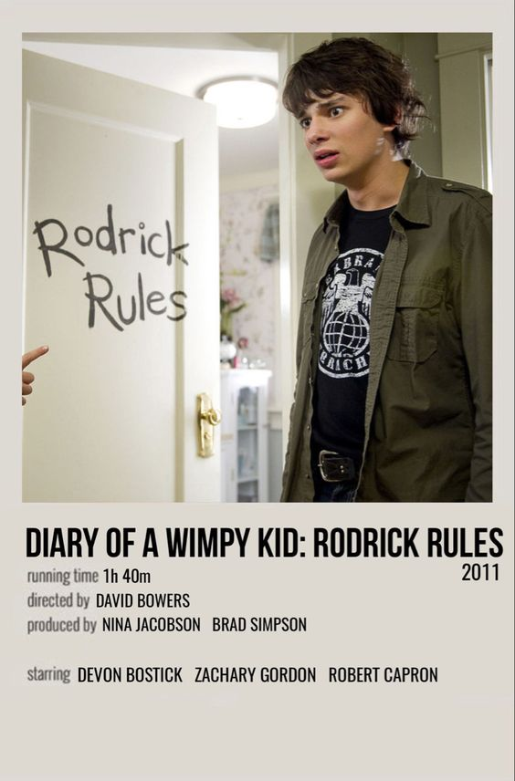
About: Diary of a Wimpy Kid: Rodrick Rules adalah novel anak-anak karya penulis dan kartunis Amerika Jeff Kinney, berdasarkan versi FunBrain.com. Ini adalah sekuel dari Diary of a Wimpy Kid, diikuti oleh The Last Straw. Sampul kerasnya dirilis pada 1 Februari 2008. Rodrick Rules dinobatkan sebagai buku terlaris New York Times di antara penghargaan dan pujian. Film live-action berdasarkan buku tersebut dirilis pada 25 Maret 2011, dan adaptasi film animasi dirilis di Disney+ pada 2 Desember 2022.
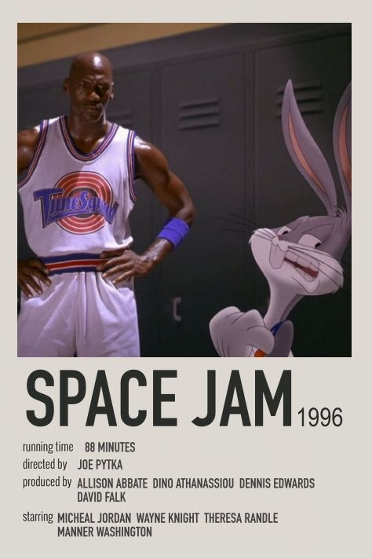
About: Space Jam merupakan sebuah film Amerika Serikat yang dirilis pada tahun 1996. Film yang disutradarai oleh Joe Pytka ini pemainnya antara lain ialah Michael Jordan, Bugs Bunny, Wayne Knight, Billy West, Dee Bradley Baker dan masih banyak lagi.Film ini dirilis pada tanggal 15 November 1996. Versi dubbing dalam Bahasa Indonesia dari film ini pernah ditayangkan di Indosiar pada tahun 2008, lalu pindah ke Big Movies Lollipop di Global TV sejak tahun 2010.
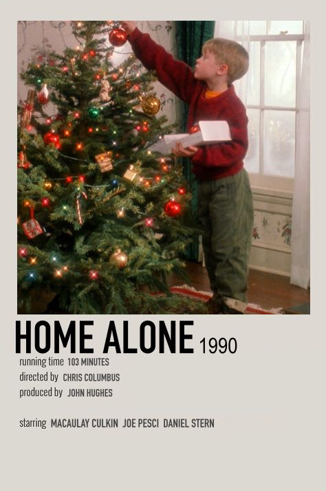
About: Home Alone (bahasa Indonesia: Sendirian di rumah) adalah sebuah film komedi yang dirilis pada tahun 1990. Film ini dibintangi oleh Macaulay Culkin sebagai Kevin McCallister, seorang anak dari keluarga yang kaya. Kevin secara tidak sengaja tertinggal oleh keluarganya yang akan berlibur ke kota Paris, Perancis, dalam rangka liburan Natal. Ketika ia menghabiskan waktu-waktunya di rumah sendirian, ia tidak sengaja bertemu dengan dua orang pencuri bodoh yang ingin merampok rumahnya. Maka, untuk menghentikan para pencuri itu, Kevin menyiapkan jebakan-jebakan untuk mereka.
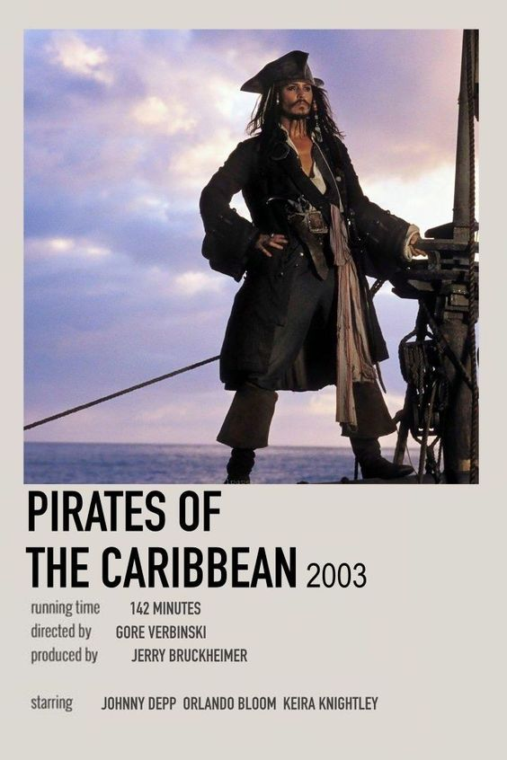
About: Pirates of the Caribbean: The Curse of the Black Pearl adalah sebuah film petualangan bajak laut dengan latar Karibia pada pertengahan abad ke-18. Film ini terinspirasi dari sebuah wahana permainan di Disneyland yang diadaptasi dari film Treasure Island.[1] Film ini disutradarai oleh Gore Verbinski, dan diproduksi oleh Jerry Bruckheimer. Film pertama Disney yang diberi rating PG-13 (parents strongly cautioned) oleh MPAA (film-film Disney umumnya diberi rating G untuk General Audiences atau PG yang berarti parental guidance suggested).
Spy Kids adalah film pertama dari trilogi film Spy Kids trilogi Spy Kids. Film ini di sutra darai dan di buat oleh Robert Rodriguez. Film ini di bintangi oleh Alexa Vega dan Daryl Sabara yang di rilis pada 2001. Film ini di rilis di United States theaters pada 30 Maret 2001 dan VHS pada 28 September 2001.
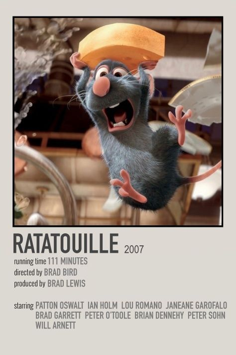
About: Ratatouille (IPA: /ˌɹætəˈtui, -ˈtwi/; bahasa Prancis: /ʁataˈtuj/[2]) adalah sebuah film animasi komputer yang dirilis tahun 2007. Film ini diproduksi oleh Pixar, dan didistribusikan oleh Walt Disney Pictures. Film ini mengenai seekor tikus yang bernama Rémy (suara oleh Patton Oswalt), yang ingin menjadi koki restoran terkenal di Paris. Film ini disutradarai oleh Brad Bird, yang mengambil alih dari Jan Pinkava pada tahun 2005, dan lalu merilisnya di Amerika Serikat pada 29 Juni 2007. Ratatouille adalah nama sebuah makanan khas Prancis.
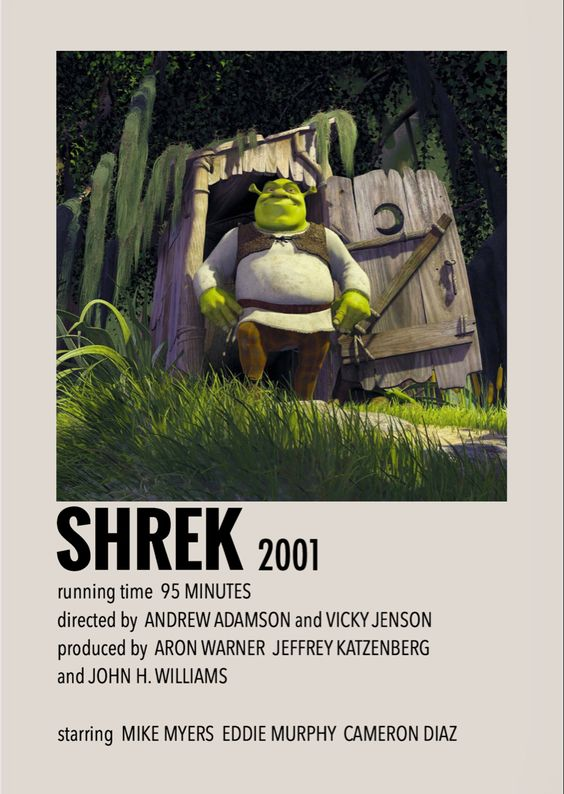
About: Shrek adalah film komedi animasi komputer tahun 2001 yang secara bebas didasarkan pada buku bergambar dongeng tahun 1990 dengan nama yang sama oleh William Steig. Disutradarai oleh Andrew Adamson dan Vicky Jenson dalam debut sutradara mereka, itu dibintangi Mike Myers, Eddie Murphy, Cameron Diaz, dan John Lithgow sebagai suara dari karakter utama. Film ini memparodikan film-film lain yang diadaptasi dari alur cerita dongeng
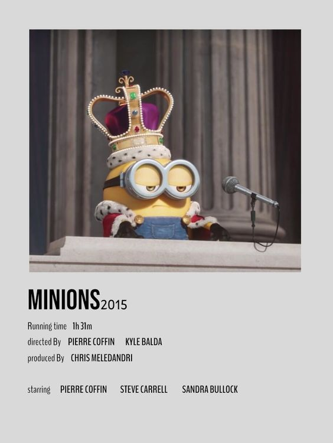
About: Minions adalah sebuah film komedi animasi komputer 3D,[6] Amerika Serikat yang tayang pada tahun 2015 dan merupakan prekuel /spin-off dari Despicable Me (2010) dan Despicable Me 2 (2013). Film tersebut diproduksi oleh Illumination Entertainment dan distribusikan oleh Universal Pictures. Ditulis oleh Brian Lynch, film tersebut disutradarai oleh Pierre Coffin dan Kyle Balda, dan diproduksi oleh Chris Meledandri dan Janet Healy.